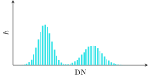

counts, normalised by the number of pixels, how often each DN
counts, normalised by the number of pixels, how often each DN  occurs; it approximates the probability density of the image values and ignores where pixels are; its running sum, the cumulative histogram, approximates the distribution function.
occurs; it approximates the probability density of the image values and ignores where pixels are; its running sum, the cumulative histogram, approximates the distribution function.Definition
For an image of  pixels:
pixels:
 is non-decreasing and reaches 1.
is non-decreasing and reaches 1.  is associated with the probability density of the DNs, with the cumulative distribution, an approximation since DNs are discrete.
is associated with the probability density of the DNs, with the cumulative distribution, an approximation since DNs are discrete.
Picture

of an image: the number of pixels at each digital number (DN).A bimodal histogram: two populations of pixels, e.g. water and land.
Uses
- choosing stretch limits and LUTs;
- equalisation through ;
- thresholds between modes for segmentation;
- detecting saturation (peaks at 0 or ) and quantization gaps.
Worked example
A  image with values (3-bit, 16 pixels): , cumulative . Equalisation to 8 levels maps : the crowded levels 0–3 are spread over 1–5.
image with values (3-bit, 16 pixels): , cumulative . Equalisation to 8 levels maps : the crowded levels 0–3 are spread over 1–5.
Intuition
The histogram is the image with its geometry thrown away: it tells what values occur and how often, not where.
Pitfall
Two very different images can have the same histogram (shuffle the pixels): histogram-based operations are blind to spatial structure.